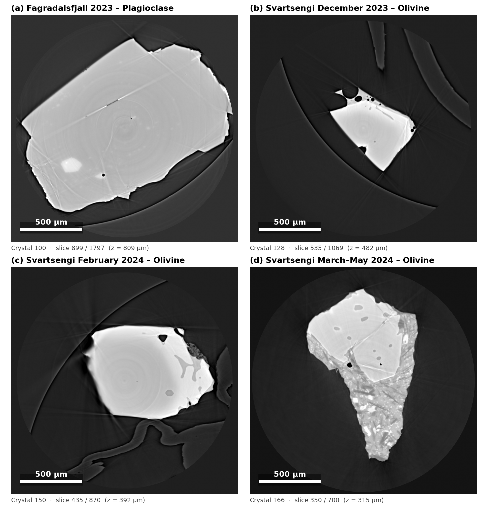

Synchrotron micro-CT of four crystals
Interactive views of four olivine and plagioclase crystals from the 2023–2024 Fagradalsfjall and Svartsengi eruptions, imaged at the SYRMEP beamline (Elettra). Everything runs in your browser; nothing needs to be downloaded or installed.
Slice viewer →
Four panels in eruption order, each scrolling through its own reconstructed stack with its own play button, slider and 500 µm scale bar.
3D viewer →
Rotate, zoom and cut through each crystal in 3D, with voids, melt and crystal as separate phases. Pick one crystal or view all four at the same scale. Needs WebGL2 (any current browser).

Static version: PNG · PDF. Voxel size 0.9 µm in the source scans (28 keV); the 3D viewer uses binned 3.6–4.5 µm voxels.

Phases in the 3D viewer are assigned from X-ray attenuation (grey level), not chemistry. See the README for methods and caveats. The viewers are large single files (16 MB and 32 MB), so the first load can take a few seconds.